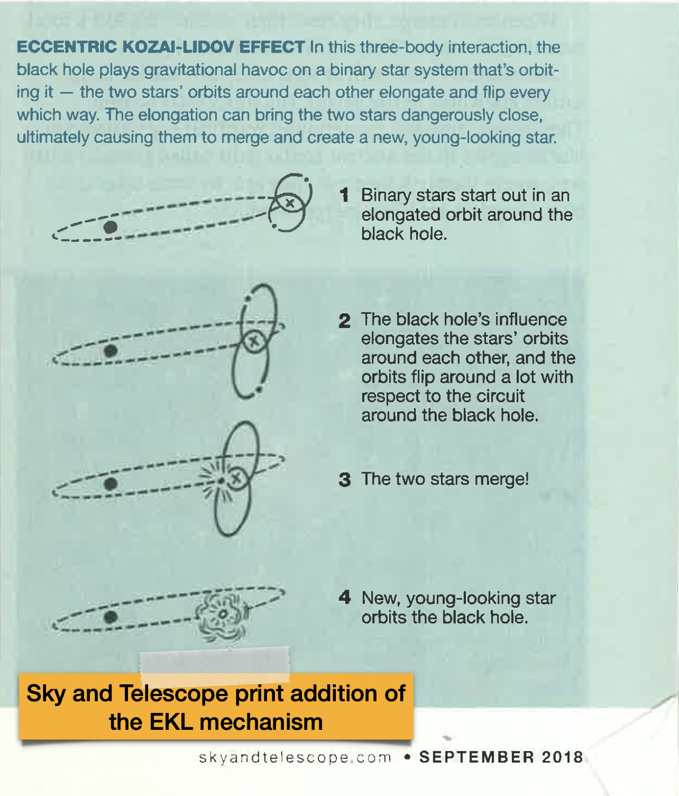

In the Media
Here are some popular science media covers related to my and my group's research and activities.

Wikipedia
1400 Degrees (Heising-Simons Foundation)
Astrobite article, 2021
UCLA College magazine - What if questions
Live Science
ynet (Hebrew)
Da Mada (דע מדע) podcast (Hebrew)
An article I wrote as a farwell to Stephen Hawking (Hebrew) Davar Rishon
My Astronomy On Tap West LA talk
Astro @UCLA: The Next Generation webinar (my talk begins at 18:50m)
Interview on Chopping BLOCK by Visceral Change
An article I wrote for The Conversation
The Daily Bruin
New York Post
BER
Sputnik International - Sputnik News
Hayadan (Hebrew)
Eating Planets for Lunch and Dinner (Stephan, Naoz, Gaudi, and Salas 2020)
New Scientist magazine.
Binary Stellar Evolution in the Galactic Center (Stephan et al 2019)
Temporary Hot Jupiters (Stephan, Naoz and Gaudi 2018)
Nature Research Highlight
AAS NOVA
Icebergs and White Dwarfs ( Stephan, Naoz and Zuckerman 2018 )
AAS NOVA
Physics Today
The curious case of HD 106906 debris disk (Nesvold, Naoz, Fitzgerald 2017)
Phys.org
ScienceDaily
EurekAlert (American Association for the Advancement of Science)
ZME Science
Sky at Night Magazine
IFLScience.com
Astronomy for Everyone A neuro-diversity workshop for high school students
Peter Edmonds blog
Kepler 56: The Death of Two Exoplanets Li, Naoz, Valsecchi, Johnson, Rasio 2014
space.com
Astronomy Magazine
Huff Post Science
Flip in Near-coplanar (Li, Naoz, Kocsis, Loeb 2014)
SciTech daily
CfA news
Generation of Primordial Magnetic Fields on Linear Overdensity Scales
APS Viewpoint in Physics by Ellen Zweibel
Retrograte Hot Jupiters (Naoz et al 2011)
Astrobiology Magazine
Astronomy now
NBC News
cosmos
Discovery news
NU news center
Physics World
Science magazine news
space.com
ynet (Hebrew)
Hayadan (Hebrew)
The first stars in the Universe (Naoz et al 2006)
Space.com